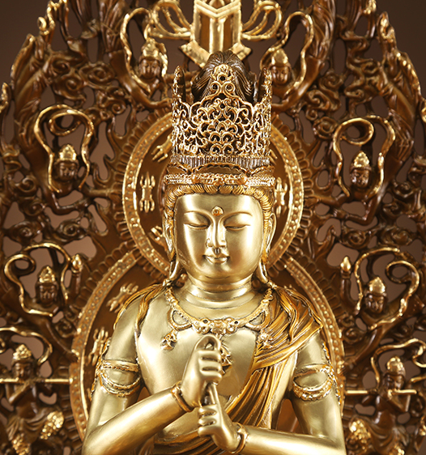
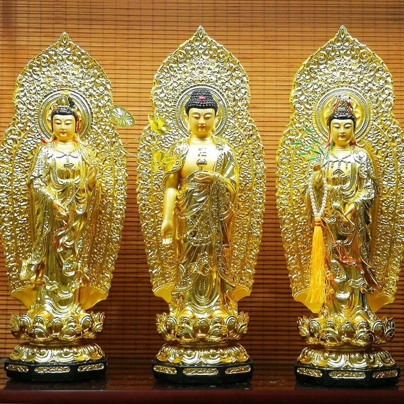
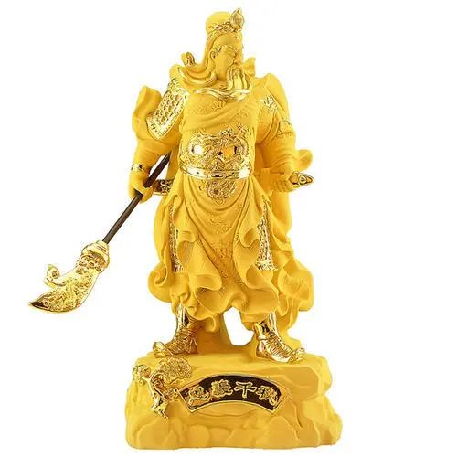
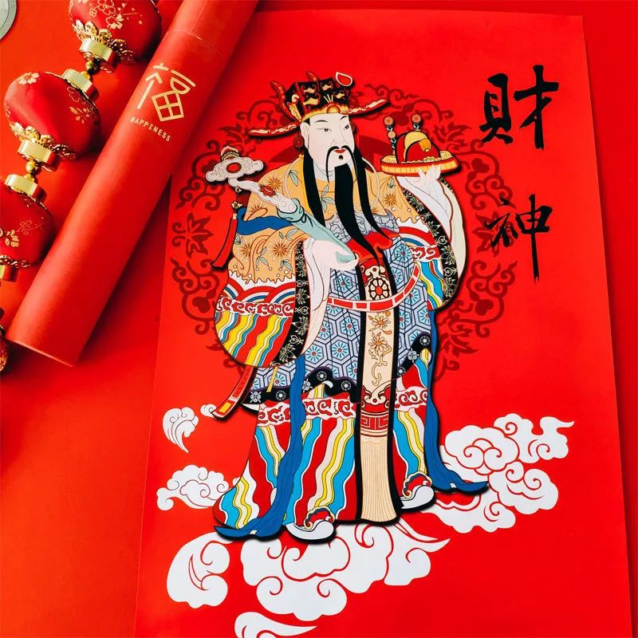

关于神像的故事 - 风水
原创 超视觉世界 Bobo 超视觉世界 2020-10-30 12:28 发表于
原文链接(长) 原文链接(短)
每一尊神像诞生之初都是艺术品，经过开光之后，他们就拥有了更高的灵魂，成为了神像。神像的能量强弱不在于质地、材料、大小、形状，而在于神像所蕴含的神性，以及与供奉者是否产生连接。今天与大家分享一些我在实际风水能量场调整中，有关神像的故事。

很多朋友有信仰，家中会供奉神像，希望得到加持与护佑，帮助自己修行更加精进。很多朋友没有信仰，家中也会摆放一些高频能量物品，如香炉、能量塔、神兽等等，这些物品如果神足也能起到加强室内空间能量场的作用，空间会得到净化。肉眼看不见的能量又是如何影响着我们的生活，给予我们加持与助力呢？接下来，这些真实的故事会让你有所感悟。
**请神下凡**
有次去一位朋友家调整风水，她信佛，平日念经，专门腾出一间屋子摆放了供桌和佛像，平时在这里打坐念经。但是我进到这个屋子后，却没有感受到一间佛堂应该蕴含的高频率能量场。通常用来做佛堂的屋子，如果主人常年在里面烧香念经，人进来后会自然被一种高频、庄严的气场所包围，顿时肃穆起敬，空气中也会飘散着经文的能量，一进屋子就能感受到与外界的不同。在这样的能量场念经持咒或打坐，才会起到事半功倍的效果。我仔细看了看供奉佛像能量状态，整个佛像只有中心点散发着微弱的光，能量已经不足了，而且没有与主人建立连接，自然起不到加持保护的效果。我告诉她神像当前的能量状态，她也感觉很奇怪， **平时念经做功课很虔诚认真，但还是现在的状态，没有什么太多的感受与改变。** 我告诉她这尊神像更像是艺术品，里面蕴含的神性光芒特别少，需要重新开光。

通常我们认为开光需要高僧大德或高功法师们亲自执行，那是因为需要在仪轨状态下，开光之人能够达到最高的能量频率状态，这样才能将宇宙虚空中无形的、具有最高频能量的神明请入到神像中，神像从此就具备了神性和灵力。所以很多的神像请回来后，其实内在的能量并不高，更不要说与主人建立连接了。首先，我让她坐在神像对面，我也闭上眼进入状态，找到光明临界，然后用法器打开高频能量通道，请神来到这里，为神像重新开光。这时，我观察到神像变得明亮，金光散射。然后，我帮助她与神像进行连接，请神加持多一份助力。连接时，虽然闭着眼睛，但是她说感到 **金光在眼前流动，太亮了睁不开眼睛，有明显的能量波涌来，身体和手感觉很热，头有一些晕，感受到了佛光普照的温暖和光芒。** 自从与佛像连接后，她告诉我每次坐在佛像前打坐念经时，进入状态特别快，时常感受到面前金光笼罩，有时闭上眼睛还能看到菩萨就在眼前。在佛光的沐浴下，人也越来越宁静祥和。
**神仙打架**
有一次，一位朋友托人紧急找到我，请我去他家处理棘手的事情。这位朋友的家是独栋别墅，来到他家我们没有着急进去，先在围墙外观察了一下房子的整体能量场。房子上空的能量比较平缓，但有一处明显异常，那里的能量很强，但不规律。我赶紧让管家记好位置，一会到房子里面查看能量场异常位置是否有什么问题。
主人迫不及待请我进屋，给我讲述事情的来龙去脉。这位朋友生意做的很大， **虽然没有固定的宗教信仰，但他对信仰十分敬畏，** 什么都信，祈求多方保佑，得到更多助力。他很善良，经常捐赠很多寺庙和出家人。最近，刚刚有人送给他一尊关公神像，他就随便放到了佛堂，但关公回来后家中发生了很多奇怪的事情，自己最近也不是很顺利。最惊奇的是，家中佛堂还出了邪事，请我赶快去处理。他将佛堂置于顶层的一间屋子，外面是密码锁，平时只有他一个人能进去，每逢初一十五进去点香上贡。走到门前，管家说这里正好就是我们在外面记录的能量异常的地方。密码门打开后，20平左右的屋子金碧辉光，墙上挂了满唐卡、坛城。三面供台摆满了大小不一的神像，舍利等等，价值连城。他把手指向左侧供桌上的一尊站立关公像，关公边旁边的神像却倒在供桌上，由于神像较多挨的紧密，互相连带着倒了好尊神像，还砸坏了供桌上的供盘。我马上明白了能量场异常的原因。

我问他，这里怎么这么多神像？他说因为经常帮助寺庙和出家人，会收到神像作为回礼，他就把所有神像都放到这间屋子里。这间屋子从来没有其他人能进入，一进来就看到眼前的景象，吓坏了，不知如何是好。
每尊神像都有特定的能量场，也都有他们独特的个性。不尊重其意愿将它们胡乱放在一起肯定要出问题的。新来的关二爷气场那么强大，所以搞得整个能量场更加混乱了。幸好他不经常进这个屋子，在里面时间长了人会头痛。他很着急，问我如何解决。首先，要将这些神像进行分类，能量相近的放在一起。然后，与这些神像进行沟通，找准他们最佳的位置摆放。例如，有的神像希望前边有花，有的神像希望身边有灯，有的希望位置高一点等等。 **当所有神像各归其位才能各司其职，** 再将神像与他建立连接，这间佛堂开始大放光芒。离开房子后我再到外面仔细观察，发现佛堂房间上空中有金黄光柱闪现，这才是一个佛堂应该具备的能量场，时刻接引着天地高频能量。
**财神年画**
有一个开店做生意的朋友，他没有宗教信仰，自然店里也没有供奉任何神像。之前生意不好请我去他店里调整一下，我看他在店里墙边摆放了一个小方台，上面摆了一个香炉。我问他平时供什么，他说不信那些，什么也不供，只点香净化一下气场。我告诉他如果只点香店铺获得了香的能量滋养，如果用香来连接神明，不仅获得香的滋养，还会得到神明的加持。他说：“那我什么都不信怎么办？”我说，做生意嘛，就请个财神保佑吧。去网上请个财神年画，贴在香炉墙上面，请来后我帮你开光做连接，既有装饰效果又能得到加持。

他照我说的做了，不久之后再去他的店里，生意兴隆，很红火。他说自从财神来了，店里生意很好，人也变得有精神了。我看着墙上那副财神年画，画上的财神栩栩如生， **画像成为一个金色的财富通道，向外流淌着金光。**
我们肉眼看到的是神像的外表，其实很多神像的内在形态与外表形象并不完全相同， **内在神灵是本质的，它是神像的灵魂，也是真神。** 这是我判断神像能量是否充足的标准，只有真正有神性的神像与供奉者连接后才具备加持护佑的作用。风水能量场调整中有很多奇闻趣事，希望以上关于神像的几个小故事能让大家对未知的世界多一份敬畏，祝福大家都能得到自己的缘分，与真神建立连接。